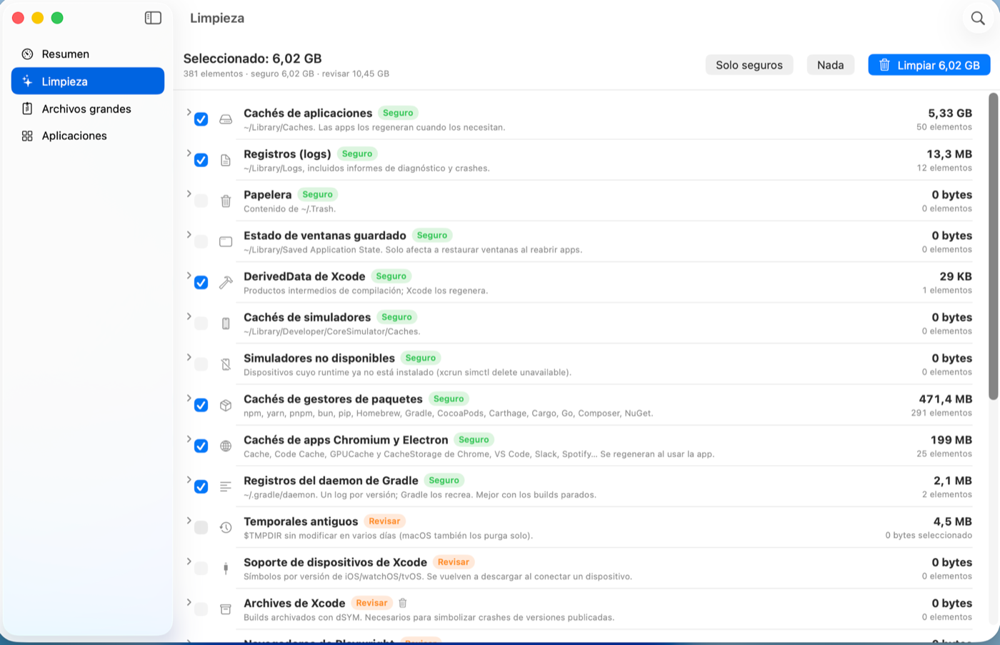

Leaner
Reclaim the disk space Xcode, Gradle, Maven, node and the simulators eat.
A native app for macOS 14 or later. Signed with a Developer ID, notarized by Apple, no telemetry.

Install
With Homebrew, which also handles updates:
brew install --cask leaner-app/tap/leanerOr from the terminal, without Homebrew:
curl -fsSL https://raw.githubusercontent.com/leaner-app/releases/main/install.sh | zshWhy it exists
Mac cleaners go after browser caches and language files. On a development machine that is pocket change: the weight is in dependency repositories, downloaded distributions, build indexes and simulators. This is the actual breakdown on the machine where Leaner is built, the first time it was run:
| Chromium and Electron app caches (Chrome, VS Code, Slack, Spotify…) | 11.5 GB |
| Local Maven repository | 7.1 GB |
| Gradle distributions and JDKs | 5.2 GB |
Command-line tool caches (~/.cache) | 2.2 GB |
| npm, yarn, pnpm, pip, Homebrew, Cargo, Go caches… | 1.2 GB |
| Gradle daemon logs | 1.2 GB |
| System caches, Trash, downloads, data from uninstalled apps… | ~1 GB |
| Total proposed | 29 GB |
After that first cleanup the same machine still proposes around 16 GB: caches come back and dependency repositories grow again. It is meant to be run periodically, not once.

What it cleans
Anything Safe is preselected; Review items are only removed if you check them yourself.
| App caches and logs, Trash, saved window state | Safe |
| Chromium and Electron app caches | Safe |
| Package manager caches and Gradle daemon logs | Safe |
| Xcode DerivedData and simulators with no runtime | Safe |
| Maven repository, Gradle distributions and JDKs | Review |
| Terminal caches, old temporary files, Playwright | Review |
| Xcode device support and archives | Review |
| Apps installed in shut-down simulators | Review |
| Mail downloads, installers and old downloads | Review |
| iPhone and iPad backups, data from uninstalled apps | Review |
It also uninstalls unused apps along with their leftover data, and finds your largest files.
Why you can trust it
An app that deletes files and asks for Full Disk Access has to earn that permission.
- The deletion policy is public. It lives in
leaner-app/path-policy with its tests:
clone it and run
swift test. It is the same file the app is built from, with itssha256. - Single authority. That policy decides when scanning and again right before every deletion, so a bug in a scanner cannot turn into a bad delete.
- Bounded scope. Only your home folder,
$TMPDIRand, when uninstalling, the app you pick. Never/System,/Library,/usror SIP-protected apps. - Off-limits areas. Mail, Messages, Photos, keychains, iCloud Drive, Apple containers and Photos or Music libraries are neither deleted nor traversed.
- Reversible where it matters. Anything marked “Review”, and uninstalls, go to the Trash.
- No telemetry. The app only reaches the network to check for a new version.